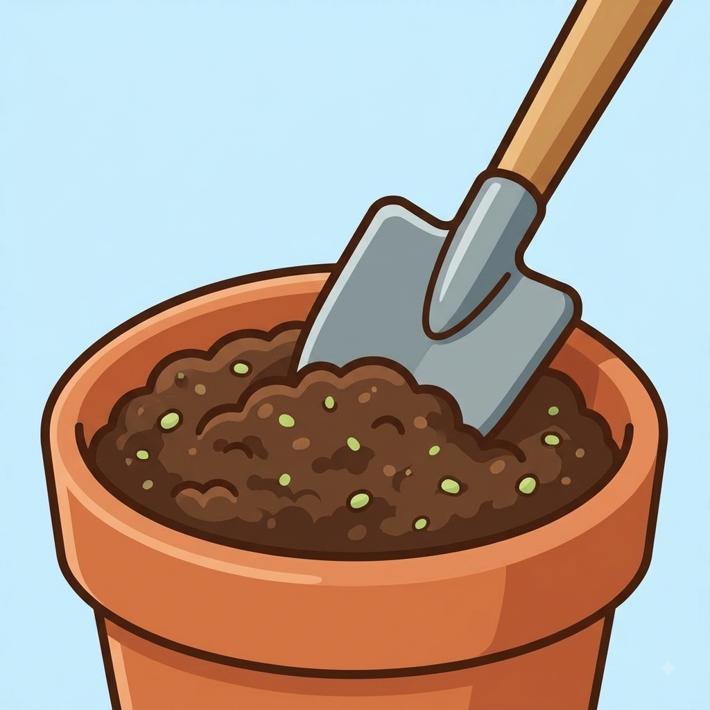

O Início do Projeto da Nossa Horta
Por: Guilherme Mocelin Zacarkim
Nossa turma na escola CQC começou a planejar o espaço onde faremos a horta. Escolhemos um local que recebe bastante luz do sol todos os dias!
Acompanhe o projeto da nossa horta comunitária feito pela nossa turma!
Por: Guilherme Mocelin Zacarkim
Nossa turma na escola CQC começou a planejar o espaço onde faremos a horta. Escolhemos um local que recebe bastante luz do sol todos os dias!

Por: Guilherme Mocelin Zacarkim
Para as plantas crescerem fortes, preparamos a terra com adubo orgânico e limpamos as pedras. O solo saudável faz toda a diferença no resultado final!
Fonte: Projeto Ciência Prática

Por: Guilherme Mocelin Zacarkim
Escolhemos plantar alface, tomate-cereja, cenoura e alguns temperos como salsinha e cebolinha, que são ótimos para o cultivo na escola.
Fonte: Guia de Jardinagem Escolar

Por: Guilherme Mocelin Zacarkim
Criamos um rodízio entre os alunos da sala para regar a horta diariamente logo pela manhã, garantindo que as plantas fiquem sempre hidratadas.
Fonte: Manual de Ecologia

Por: Guilherme Mocelin Zacarkim
Depois de alguns dias de cuidado constante, os primeiros brotinhos verdes começaram a nascer. A turma toda comemorou o resultado do trabalho em equipe!
Fonte: Diário da Horta CQC

Por: Guilherme Mocelin Zacarkim
Em breve faremos a primeira colheita das verduras! Nossa ideia é organizar uma refeição especial com a sala para provar os alimentos cultivados por nós.
Fonte: Nutrição Escolar CQC